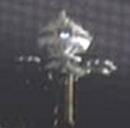

|
|
Deep Space Five |
|
||
|  |
In una realtà quantica
in cui entra Worf nel 2370, questa stazione viene spiata dai
Cardassiani che hanno riprogrammato il telescopio di Argus
(Parallels).
Base della Federazione, situata vicino a
Ivor Prime la quale, nel
2373, comunica al comando di Flotta che i
Borg hanno distrutto la colonia
federale presente sul pianeta (First Contact).